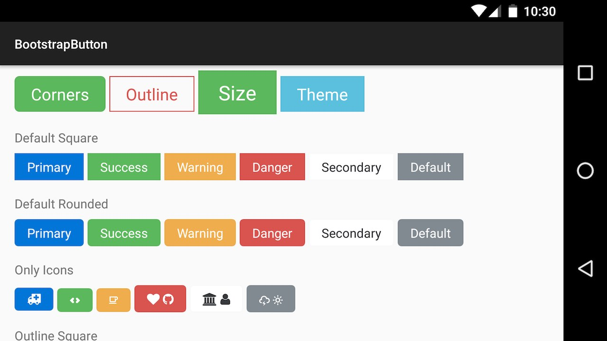
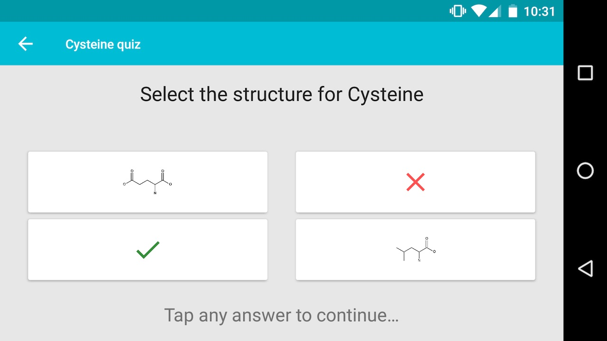

This website displays some of my work as an Android Developer, and technical blog posts on software in general.
If you like what you see, please feel free to get in touch by clicking here.
Android Bootstrap brings Twitter-style Bootstrap Widgets to the Android platform. With over 6,000 stars on Github, this open-source project runs on millions of Android devices each day.

An educational app for Android which helps university students revise chemical structures. 15k+ downloads, 4.5+ star rating, freely available on Google Play.

I currently work on an open-source error-detection SDK at Bugsnag as a Software Engineer. I am responsible for developing the Android and Cocoa respositories, as well as React Native and Unity.
I developed native Android & iOS apps for various clients at a digital agency. Some of the technologies used include Java, JUnit, Objective-C, Swift, Git, and Gradle.
My degree specialised in bioinformatics, a field which utilises software and computing to solve scientific problems.